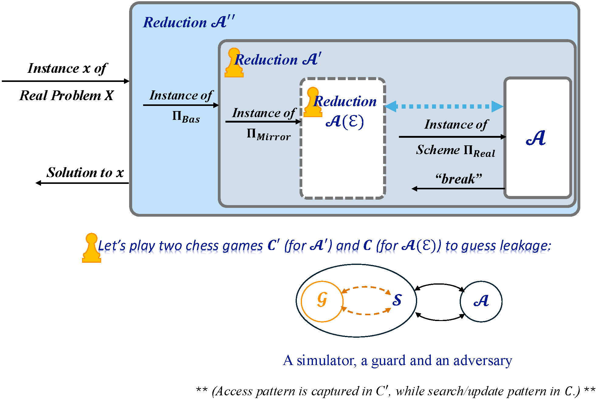

Ruoyang Rykie Guo
I am in my third year pursuing my second PhD in electrical and computer engineering at Stevens Institute of Technology. Previously, I completed my first PhD and BS in computer science at Renmin University of China. I always focus on advancing the uncharted frontiers of Applied Cryptography, exploring Theoretical foundations to deal with emerging security and privacy challenges, with particular emphasis on AI-related threats.
Latest Advances in Theory
Below is a prototype of A Leakage-Guessing Proof System for privacy analysis:
 Design Philosophy -- The design of this framework is driven by cross-referencing system ideology.
If we talk about leakage, we mean leakage relative to some reference state,
so a mirror construction is derived alongside the real construction.
An assumption is invoked here: all elements in the mirror construction are fully protected (assumed perfect security).
By 'all elements,' we mean everything from data and its expression down to storage—including content,
organizing methods (indices), inter-connections (pointers), and server locations.
Of course,
this mirror construction lacks computational functionalities,
while it serves as a "perfect" reference to expose leakage in the real construction that it mirrors.
To simulate the reduction from $\Pi_{Real}$ to $\Pi_{Mirror}$,
we follow the traditional cross-query pattern between an S and an A to derive a game.
Unlike coin-toss philosophy, this game extracts deterministic information through a rule-based leakage-crawling chain at which place search/update patterns lie.
(When discussing search/update pattern, we consider leaked statistical information about data.)
Then, the design logic of chess game C works as follows: a simulator S that simulates reduction from $\Pi_{Real}$ to $\Pi_{Mirror}$ is invoked to expose what leaked in real versus mirror.
Since S needs to crawl the leaked information and such information requires plaintexts -- meaning it must invoke Enc/Dec oracles for each cipher in mirror --
we additionally introduce another role: Guard G to handle this process.
Acting as an idealized reference state with a God's-eye view, G reverses the cipher-to-message trajectory.
Its existence ensures messages reversed from $\Pi_{Mirror}$'s ciphers retain their original content and connections.
Following the leakage-crawling chain, S continuously queries G for the needed information.
Finally, S can respond with the result to the adversary A;
and the simulator running this game can use it to measure the leakage proportion/range/level compared to the complete database.
This is exactly what we are looking for: the leakage and its measuring.
In other words, the leakage-crawling chain translating search/update pattern into rules gets transferred to the S-G interaction layer,
which dictates the cross-query modes how G and S interact with each other.
The above proof system has been used for analyzing privacy in the work below,
[1]: Threshold-Protected Searchable Sharing:
Privacy Preserving Aggregated-ANN Search for Collaborative RAG.
:
I am sincerely looking for collaborations to develop this theory or
chase sky-bound ideas!
" This is an uncharted area with numerous possibilities and fun, alongside risks. A specific direction awaits wherever this path leads, waiting to be explored, sooner or later ~ "
Selected Publications
-
 2025
(Tutorial is en route). Highlight.
2025
(Tutorial is en route). Highlight.